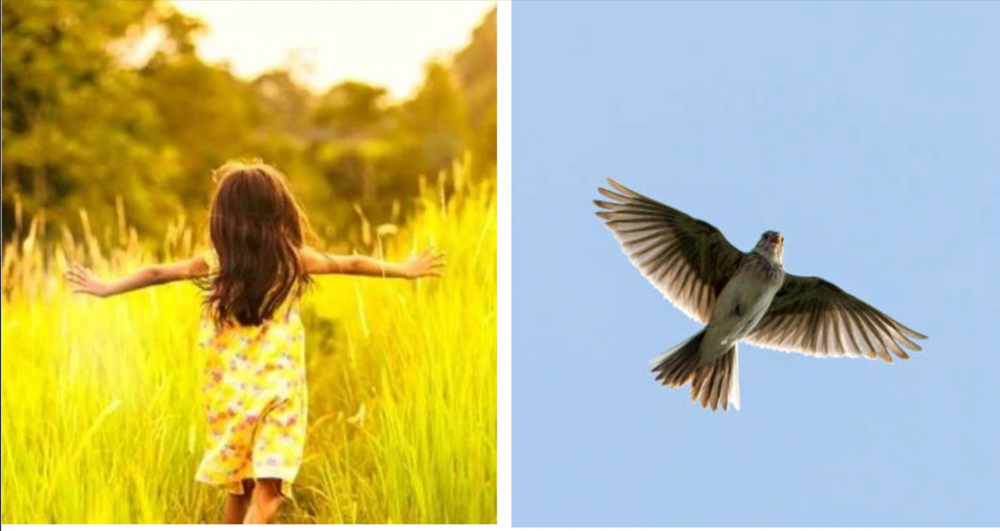
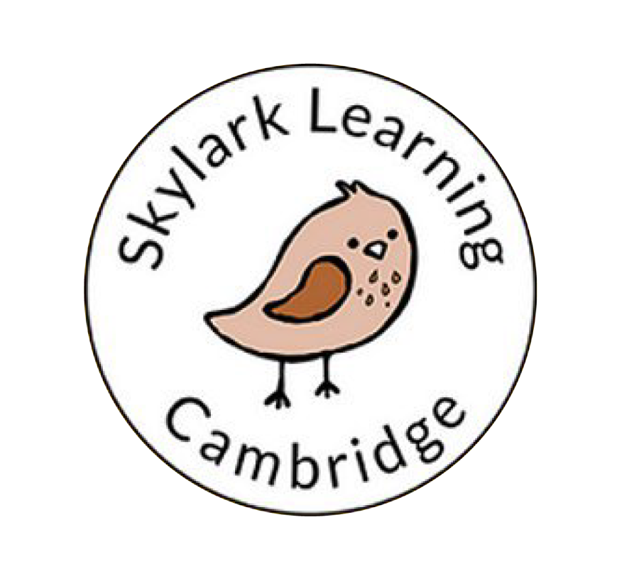
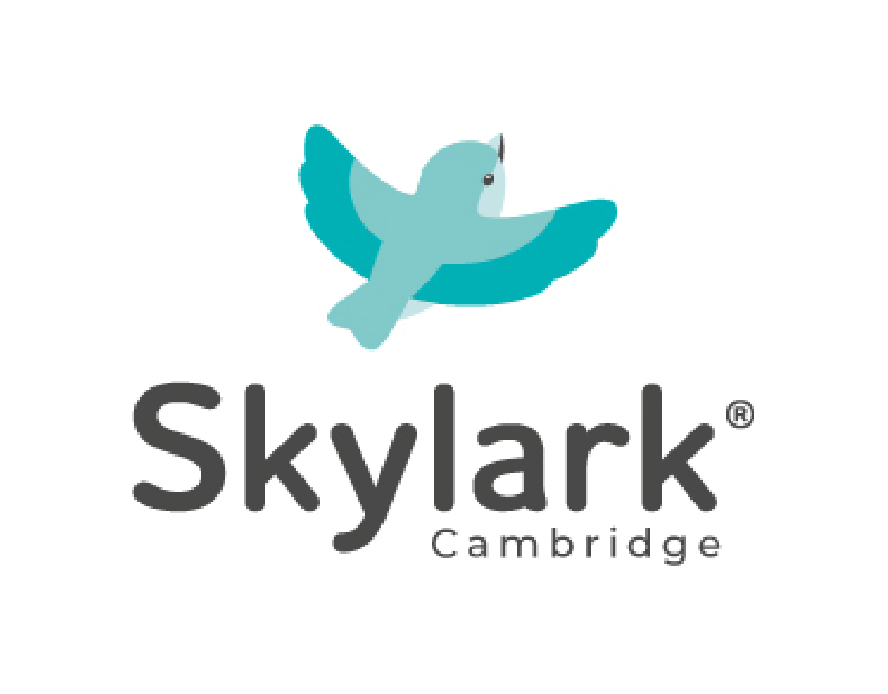
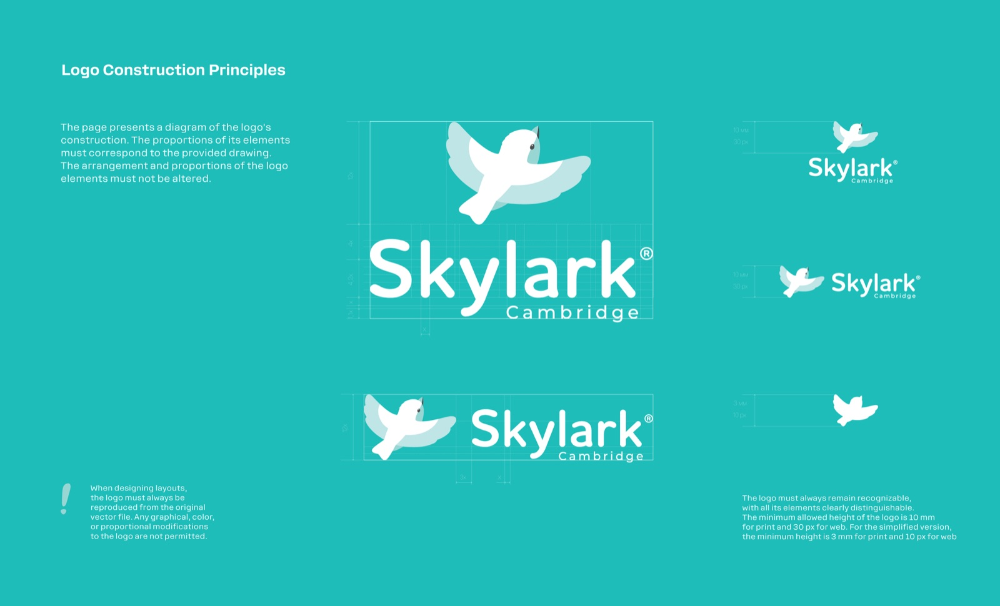
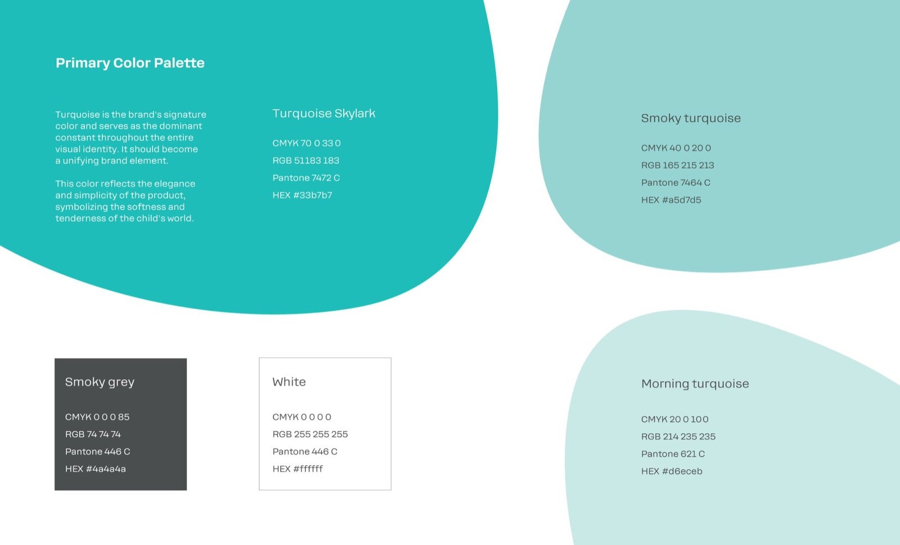
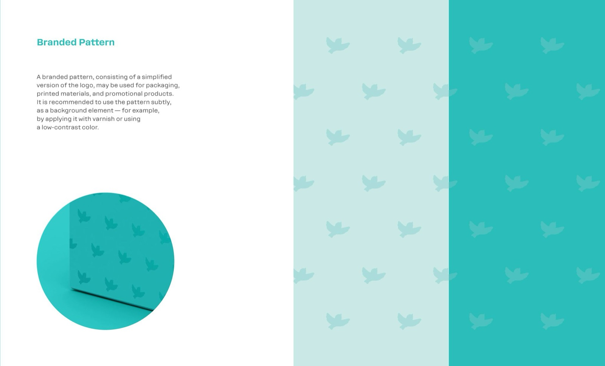

Design Objectives
Develop a new logo and visual identity for Skylark Learning, with a strong focus on creating a unified "color spot" to ensure brand recognition on store shelves. The main objective was to convey the brand’s premium quality, uniqueness, and expertise in children’s educational products.

Higher still and higher
From the earth thou springest
Like a cloud of fire;
The blue deep thou wingest,
And singing still dost soar, and soaring ever singest.
Creative Process
The design process began with identifying the core values of the brand — lightness, freedom, and trust. Drawing inspiration from the company's original symbol, the skylark, I developed a graphic representation of the bird in flight, aiming to capture the feeling of upward motion and openness.

Before
The company's original symbol was a skylark, and the goal was to graphically depict a bird in flight, soaring upward. The aim was to convey a sense of flight and freedom.
After
The resulting logo turned out light and fresh, and a unique "Skylark" inscription was also developed, which successfully complemented the symbol with its soft shapes.


A custom logotype "Skylark" was crafted to complement the bird mark, using soft, rounded forms that reflect the gentle and nurturing world of children. The logo construction followed precise geometric guidelines to maintain visual balance and scalability across formats.

The identity system was expanded with a simplified logo version for smaller applications and a custom brand pattern, designed for packaging and promotional materials. The pattern subtly incorporates elements of the logo to reinforce recognition without overpowering the main visuals.

Outcome
The final identity system features a light and fresh logo paired with a unique turquoise color, now a core brand element. This color functions as a consistent visual cue across all materials, symbolizing calmness, elegance, and the delicate nature of childhood. The cohesive system enhances brand recognition and positions Skylark Learning as a premium, expert-driven company in the educational market.
Credits
- Company
- Skylark Learning
- Role
- Creative & graphic designer
- In collaboration with
- Marketing & Development team